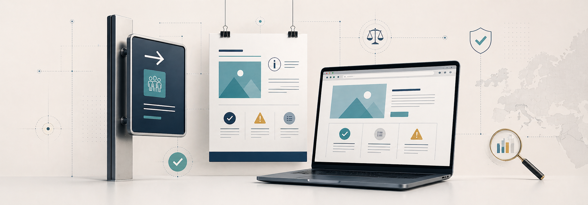

Quem recebe fundos europeus assina, sem reparar muito, numa cláusula que tem mais peso do que parece. Compromete-se a comunicar publicamente que o projeto está a ser financiado pela União Europeia e esta é uma obrigação legal cujo incumprimento tem consequências financeiras concretas, que podem chegar à devolução parcial do incentivo recebido.
A Comissão Europeia quer que os cidadãos saibam onde o dinheiro do orçamento da UE está a ser aplicado. Por isso, exige que cada beneficiário com operações co-financiadas por fundos comunitários, mostre essa origem em locais visíveis. Placas, cartazes, websites, redes sociais, contratos com fornecedores. A obrigação atravessa todos os canais em que o projeto se torne público.
O que muda entre programas é a intensidade. Um projeto Horizonte Europa não tem as mesmas regras que um projeto cofinanciado pelo FEDER. Um beneficiário do PRR cumpre exigências ligeiramente diferentes das de um beneficiário do COMPETE 2030. As regras cruzam-se, mas não são idênticas. E é nessa diferença que muitas empresas tropeçam, em particular as que operam em mais de um programa em simultâneo.
Porque é que existem estas regras
A obrigação de comunicação nasceu dos regulamentos europeus que enquadram cada quadro de financiamento. Para o ciclo 2021 a 2027, o regulamento de referência é o Regulamento (UE) 2021/1060, conhecido como Regulamento de Disposições Comuns (CPR), que define as regras gerais para o FEDER, FSE+, Fundo de Coesão, FAMI e outros. O artigo 50.º deste regulamento e o anexo IX são onde as obrigações de visibilidade ficam explicitadas.
A justificação tem três camadas. A primeira é democrática. O orçamento europeu é financiado pelos contribuintes dos Estados-Membros e a Comissão Europeia precisa de mostrar que esse dinheiro produz efeitos visíveis. A segunda é técnica. A visibilidade reforça a auditabilidade dos projetos: se há uma placa que diz "este equipamento foi cofinanciado por X em Y", torna-se mais difícil simular ou desviar fundos. A terceira é política. Em momentos em que a confiança na União Europeia é testada, as instituições querem que cada agricultor, cada empresário, cada técnico de saúde que beneficia do orçamento europeu reconheça concretamente essa relação.
Estas regras são uma condição de elegibilidade da despesa, não uma opção. Quem não cumpre arrisca correções financeiras, sendo que a Inspeção-Geral de Finanças, o Tribunal de Contas Europeu e os organismos de gestão dos programas verificam regularmente se as regras foram seguidas.
O que tem de aparecer, sempre
Há um conjunto mínimo de elementos que todos os beneficiários, independentemente do programa ou da dimensão do projeto, têm de mostrar nas suas comunicações sobre o financiamento. Esse conjunto é o seguinte:
- Emblema da União Europeia: a bandeira azul com as 12 estrelas, em formato e proporções definidas pelo manual gráfico oficial.
- Texto "Cofinanciado pela União Europeia": ou variante consoante o fundo (ex: "Financiado pela União Europeia, NextGenerationEU" no caso do PRR).
- Identificação do programa: "Portugal 2030", "Plano de Recuperação e Resiliência", "Horizonte Europa", consoante o caso. Em programas regionais, identificação do programa operacional regional.
- Logótipos da República Portuguesa e do Programa: obrigatórios em programas operacionais nacionais e regionais cofinanciados.
A regra geral é a de que estes elementos têm de ser visualmente proporcionais. Se um beneficiário coloca o seu próprio logo num cartaz com 30 cm de altura, o emblema da UE não pode ter 2 cm. A escala tem de respeitar a importância do financiador. Cada manual gráfico (UE, AD&C, IAPMEI, Recuperar Portugal) detalha as proporções aceitáveis.
Há ainda elementos opcionais que se tornam obrigatórios em determinadas situações. O número do projeto, a designação oficial da operação, o montante de financiamento aprovado e a data de aprovação são frequentemente exigidos em placas permanentes e na descrição do projeto no website do beneficiário.
Os três grandes formatos
As obrigações concretas de comunicação organizam-se, na prática, em três tipos de suportes: placas físicas, cartazes ou pósters, e canais digitais (website, redes sociais). A regra que determina qual destes se aplica depende da natureza e do valor do projeto.
Placas permanentes
Aplicam-se a projetos que envolvem investimento físico em infraestruturas, edifícios, equipamentos imóveis ou intervenções em espaço público. Construção de uma fábrica nova com apoio Portugal 2030, reabilitação de um edifício patrimonial, instalação de um centro tecnológico, modernização de uma escola, todos são casos típicos.
O limiar de obrigatoriedade é, regra geral, 500 mil euros de custo total do projeto cofinanciado, embora alguns programas baixem este valor para 100 mil euros em casos específicos. Acima desse valor, é obrigatório instalar uma placa permanente em local visível, dentro de seis meses após a conclusão do projeto. A placa tem de ser legível à distância normal de circulação no local, ter dimensões mínimas que dependem do tipo de obra, e manter-se durante pelo menos cinco anos após o pagamento final do incentivo (período de manutenção do investimento).
Os materiais permitidos têm de resistir a intempéries. Vinil em madeira contraplacada não é aceite numa instalação industrial exterior. As placas mais comuns são em PVC rígido, alumínio composto ou acrílico, com impressão UV ou serigrafia, montadas em estrutura de fixação metálica.
Cartazes ou pósters temporários
Aplicam-se durante a execução do projeto, antes da instalação da placa permanente. Para projetos de menor dimensão (abaixo de 500 mil euros), o cartaz substitui a placa permanente. O formato mínimo geralmente exigido é A3 (29,7 x 42 cm), embora muitos programas recomendem A2 (42 x 59,4 cm) para garantir legibilidade.
O cartaz deve ser colocado em local visível ao público, junto à entrada principal das instalações onde o projeto é executado. Numa empresa, isso significa habitualmente a recepção ou a porta principal de acesso.
O conteúdo segue a mesma estrutura: emblema UE, texto de cofinanciamento, identificação do programa, designação do projeto, montante aprovado.
Website e redes sociais
É a obrigação que mais frequentemente é ignorada. Qualquer beneficiário que tenha website oficial é obrigado a publicar nele uma descrição do projeto cofinanciado, com os elementos mínimos referidos acima, e a manter essa publicação durante todo o período de execução e o período de manutenção subsequente.
Não basta mencionar o financiamento numa notícia que envelhece e desaparece da home page. Tem de existir uma página dedicada, acessível a partir do menu principal ou do rodapé, com a designação do projeto, sumário, datas, valor do incentivo, fonte do cofinanciamento e logótipos.
Em redes sociais, a obrigação é mais flexível. Geralmente exige-se pelo menos uma publicação que mencione o financiamento, com o emblema da UE visível, no início e no fim da execução do projeto. Algumas autoridades de gestão exigem publicações regulares ao longo da execução, sobretudo em projetos com componente cultural, social ou de divulgação.
Há ainda obrigações cruzadas que muitos esquecem. Materiais de marketing, brochuras, apresentações comerciais ou catálogos que descrevam produtos ou serviços que beneficiaram do cofinanciamento devem incluir o emblema UE e a referência ao programa. O mesmo se aplica a comunicados de imprensa, estudos publicados, relatórios técnicos e qualquer documento institucional que descreva resultados do projeto.
Diferenças entre programas
As regras gerais são europeias, mas a aplicação concreta varia entre programas. As diferenças não são dramáticas, mas existem e têm de ser respeitadas.
| Programa | Limiar de placa permanente | Texto obrigatório | Manuais de referência |
|---|---|---|---|
| Portugal 2030 | 500K EUR (custo total) | "Cofinanciado pela União Europeia" | Manual de Comunicação AD&C |
| PRR | 500K EUR (custo total) | "Financiado pela União Europeia, NextGenerationEU" | Manual de Imagem do Recuperar Portugal |
| Horizonte Europa | Sem limiar fixo | "Funded by the European Union" | EU Funding & Tenders Communication Guidelines |
| COMPETE 2030 | 500K EUR (custo total) | "Cofinanciado pela União Europeia" | Manual COMPETE 2030 |
| Programas Regionais (POR Centro, POR Norte, etc.) | 500K EUR (custo total) | "Cofinanciado pela União Europeia" | Manuais regionais específicos |
O PRR merece atenção particular. Sendo um instrumento financiado pelo NextGenerationEU, o texto a usar é diferente do dos fundos estruturais clássicos. A confusão é frequente: empresas com projetos PRR colocam "Cofinanciado pelo Portugal 2030" e isso é, formalmente, um erro técnico. Da mesma forma, projetos Horizonte Europa não usam a marca do Portugal 2030, mesmo que sejam executados em Portugal.
O Horizonte Europa, por ser gerido directamente pela Comissão Europeia em Bruxelas, tem regras distintas. Não há limiares de placa em função de valor de investimento, mas há obrigação de incluir a referência "Funded by the European Union. Views and opinions expressed are however those of the author(s) only and do not necessarily reflect those of the European Union or [granting authority]" em todas as publicações científicas, divulgação ou material de comunicação que decorra do projeto.
Os erros mais frequentes
Muito do que se passa nas auditorias é repetitivo. Os mesmos erros aparecem em projetos diferentes, em sectores diferentes, em territórios diferentes. Conhece-los antes ajuda a evitá-los.
- Não ter cartaz durante a execução: a empresa instala a placa final no fim do projeto e ignora o período de execução, durante o qual o cartaz é obrigatório. A auditoria detecta facilmente: basta um Street View antigo ou uma fotografia do início da obra para mostrar que não havia comunicação.
- Emblema UE em proporção errada ou em cor incorrecta: o emblema tem que respeitar o azul reflex Pantone 2747, com as estrelas em amarelo Pantone 116. Versões pretas ou monocromas só são aceites em situações específicas. Um emblema redesenhado, com efeitos visuais ou cores próximas mas não exactas, é considerado incumprimento.
- Página do website desactualizada ou ausente: a empresa cria a página no início, esquece-se durante a execução, e quando vem a auditoria a página ou já não existe ou tem o link partido. É uma das falhas mais comuns e mais fáceis de corrigir.
- Mistura de programas: empresa que tem um projeto Portugal 2030 e outro PRR coloca os mesmos logos em ambos. Cada projeto deve identificar o seu programa concreto, com o texto correspondente.
- Materiais de comunicação sem referência: brochuras de produto, vídeos institucionais, apresentações comerciais que descrevem o equipamento ou o resultado cofinanciado mas não referem o programa. Se o output beneficiou do incentivo, a referência tem de aparecer.
- Placa permanente removida antes de tempo: a placa tem de manter-se durante o período de manutenção do investimento, geralmente cinco anos após o último pagamento. Removê-la antes, mesmo por motivos estéticos ou logísticos, é incumprimento.
O erro mais subtil é o da identificação errada da entidade gestora. Em projetos cofinanciados por programas operacionais regionais, é comum os beneficiários colocarem como entidade gestora a Comissão de Coordenação Regional em vez do Programa Operacional propriamente dito, ou inverterem a ordem dos logótipos. Pode parecer detalhe, mas é detalhe que conta no momento da auditoria.
Como organizar isto na empresa
Em empresas pequenas e médias, a obrigação de comunicação cai geralmente sobre a pessoa que escreveu a candidatura, ou sobre o gestor financeiro. Em empresas maiores, é frequentemente entregue ao departamento de marketing, sem que este perceba bem as regras técnicas. O resultado, em ambos os casos, é o mesmo: a comunicação acaba por ser feita à última hora, com pouco rigor, e gera não conformidades.
Vale a pena organizar o processo desde o início. Três passos bastam para evitar a maioria das falhas.
Primeiro: identificar, no momento em que o contrato é assinado, qual o manual gráfico aplicável. Para Portugal 2030, é o Manual de Comunicação da Agência para o Desenvolvimento e Coesão (AD&C). Para o PRR, é o Manual de Imagem do Recuperar Portugal. Para o Horizonte Europa, são as guidelines da Comissão. Estes manuais estão disponíveis online, são gratuitos e contêm versões editáveis dos logótipos e modelos de placa e cartaz.
Segundo: definir um responsável interno pela comunicação do projeto. Pode ser o gestor financeiro, o gestor do projeto ou um elemento do marketing, mas tem de ser uma pessoa só, com calendário definido. Cartaz no início da execução, comunicação em redes sociais nas datas-chave, página dedicada no website, placa permanente na conclusão.
Terceiro: documentar tudo. Fotografias da placa instalada, screenshots da página do website, capturas das publicações em redes sociais, exemplares dos cartazes. Esta documentação tem de ser arquivada com o restante dossier do projeto e mantida durante o período de manutenção. Em auditoria, é o que demonstra cumprimento.
Quem fiscaliza, quando e como
A fiscalização do cumprimento das obrigações de comunicação é multinível. Numa primeira camada, a autoridade de gestão do programa concreto (AD&C, IAPMEI, ANI, COMPETE 2030, Estrutura de Missão Recuperar Portugal, agências regionais) verifica o cumprimento durante as visitas de acompanhamento ao projeto. Estas visitas acontecem normalmente uma a duas vezes por execução, dependendo do valor do projeto e do tipo de operação.
Numa segunda camada, a Inspeção-Geral de Finanças e o Tribunal de Contas português podem realizar auditorias temáticas ou pontuais, com poderes para examinar qualquer projeto financiado por fundos europeus. Numa terceira camada, a Comissão Europeia, através da DG REGIO, DG EMPL, DG RTD e outras, e o Tribunal de Contas Europeu, realizam auditorias de sistema, em que tomam uma amostra de projetos por país e verificam todos os aspectos, incluindo a comunicação.
O que estes auditores procuram, especificamente: presença física da placa ou cartaz no local, conformidade do conteúdo (logos, texto, dimensão), presença da página dedicada no website do beneficiário, evidências em redes sociais, materiais promocionais com referência ao financiamento, e documentação que prove a comunicação durante toda a execução do projeto.
As correcções financeiras aplicáveis seguem uma escala, definida pela Decisão da Comissão C(2019) 3452 e adaptada por orientações nacionais. Tipicamente: incumprimento parcial corrigido após notificação, correcção de 1 a 2%; incumprimento parcial não corrigido, correcção de 3 a 5%; incumprimento total e persistente, correcção de 5 a 25%; incumprimento sistemático ou intencional, correcção que pode chegar a 100% da despesa elegível associada.
Convém pôr em perspectiva. Em projetos de 1 milhão de euros, uma correcção de 3% representa 30 mil euros que a empresa terá de devolver. Em projetos de 10 milhões, são 300 mil. O custo de produzir e instalar uma placa correcta, por contraste, raramente ultrapassa os 800 euros, mesmo em modelos premium. A relação custo-benefício é evidente.
Como aplicar este conhecimento
O cumprimento das regras de comunicação não é tarefa para deixar para o fim. Quem trata o assunto na hora da auditoria já está atrasado, e geralmente paga por isso. Quem trata na assinatura do contrato e mantém disciplina ao longo da execução nem dá pelo tema. É essa diferença que distingue empresas que executam projetos europeus com tranquilidade das que vivem em sobressalto.
Para quem está prestes a assinar um contrato de financiamento, três acções imediatas. Identificar o manual gráfico aplicável e descarregar todos os logótipos editáveis. Definir uma pessoa interna responsável pela comunicação do projeto, com mandato e prazos. Criar uma pasta de evidências, partilhada entre o gestor financeiro e o responsável de comunicação, onde todas as fotografias, capturas de ecrã e documentos comprovativos vão sendo arquivados ao longo da execução.
Para quem já tem projetos em execução e nunca pensou seriamente no tema, a recomendação é fazer uma auditoria interna. Em duas horas é possível verificar: existe cartaz visível no local? Existe placa permanente nos projetos já concluídos com mais de 500 mil euros? Existe página dedicada no website? Existe pelo menos uma publicação em redes sociais com o emblema UE? Os materiais comerciais que descrevem produtos ou equipamentos cofinanciados incluem a referência? Se a resposta a alguma destas perguntas for negativa, é preferível corrigir agora, antes de uma auditoria, do que esperar para ser notificado.
Para empresas com vários projetos em simultâneo de programas distintos, a melhor prática é centralizar o controlo da comunicação numa pessoa só, com tabela de obrigações por projeto. Excel simples chega: nome do projeto, programa, datas-chave, suportes obrigatórios, evidências disponíveis, link da página dedicada. Esta tabela, mantida actualizada, resolve 90% dos problemas que aparecem em auditoria.
Há ainda uma decisão estratégica, que não é apenas técnica. Algumas empresas tratam a comunicação dos projetos europeus como obrigação aborrecida e cumprem o mínimo. Outras usam-na como ferramenta de comunicação corporativa, integrando o emblema UE e a referência ao programa em campanhas próprias, em embalagens, em comunicados, em apresentações comerciais. Esta segunda abordagem, além de garantir cumprimento, transforma a obrigação em activo de marca: mostra ao mercado que a empresa investe, inova e tem capacidade técnica para captar e executar fundos europeus. Para um cliente, um parceiro ou um investidor, isso conta.
A Open Capital trabalha com beneficiários de fundos europeus em todas as fases, desde a candidatura até ao encerramento da execução. As regras de comunicação são uma parte pequena mas crítica desse trabalho.
Comentários, correções ou contrapontos são bem-vindos: geral@opencapital.pt